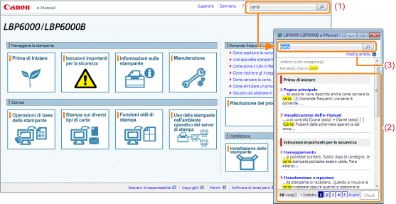

|
(1)
|
[Digitare la parola chiave]
Immettere una parola chiave nell'apposito campo che si trova in alto a destra di "Pagina principale" e "Pagina dell'argomento", quindi fare clic su [
È possibile effettuare la ricerca anche immettendo una parola chiave nella finestra visualizzata.
Inoltre è possibile utilizzare l'operatore logico AND nell'e-Manual, pertanto si può rifinire una ricerca riducendo i risultati tramite due o più parole chiave. Quando si immettono le parole chiave, separarle con uno spazio.
Esempio: "sostituzione toner" (per visualizzare le pagine in cui compaiono entrambe le parole "sostituzione" e "toner")
|
|
(2)
|
Risultato della ricerca
Vengono visualizzati i risultati della ricerca di una parola chiave.
Se i risultati della ricerca sono più di 10 è possibile visualizzare gli altri risultati facendo clic su [<< Indietro], [Avanti >>] oppure sul numero che si trova sotto il risultato.
|
|
(3)
|
[Mostra ambito]
Per specificare un ambito della ricerca fare clic qui, quindi selezionare la casella di controllo relativa alla categoria in cui limitare la ricerca.
|